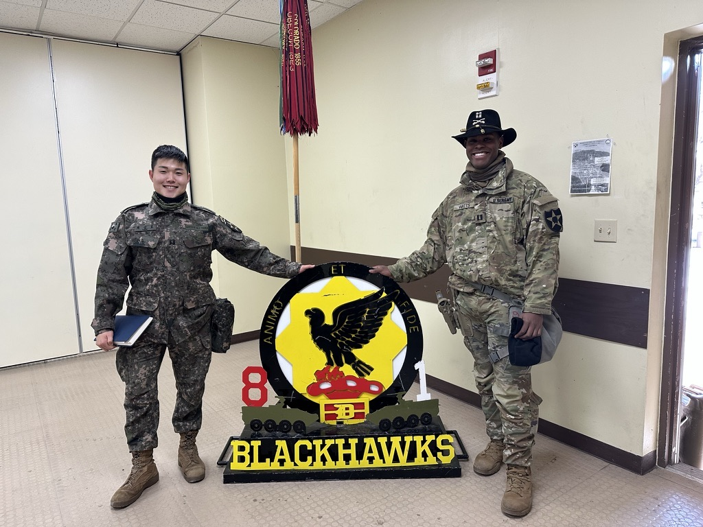
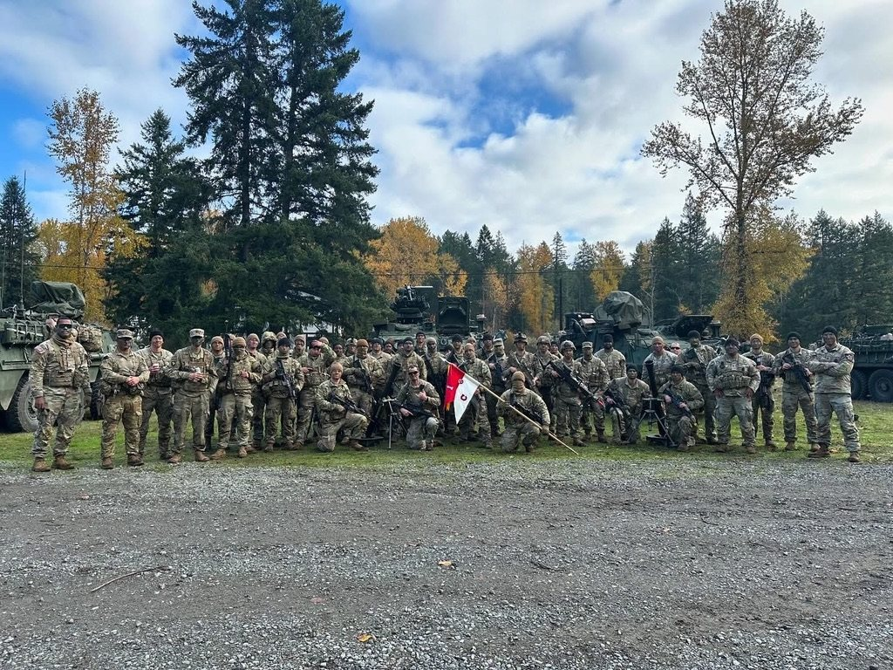
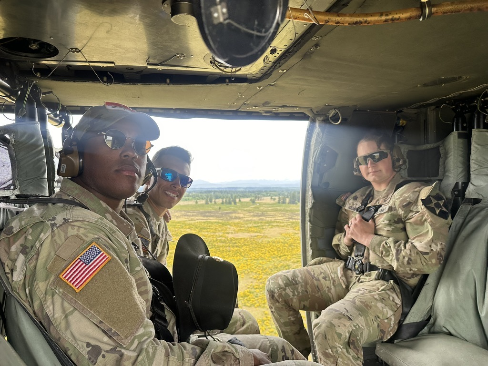
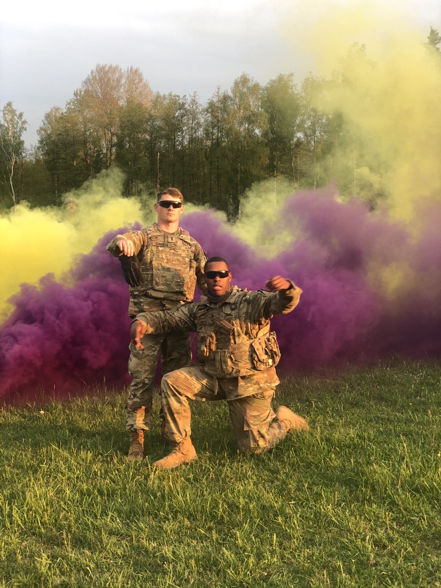
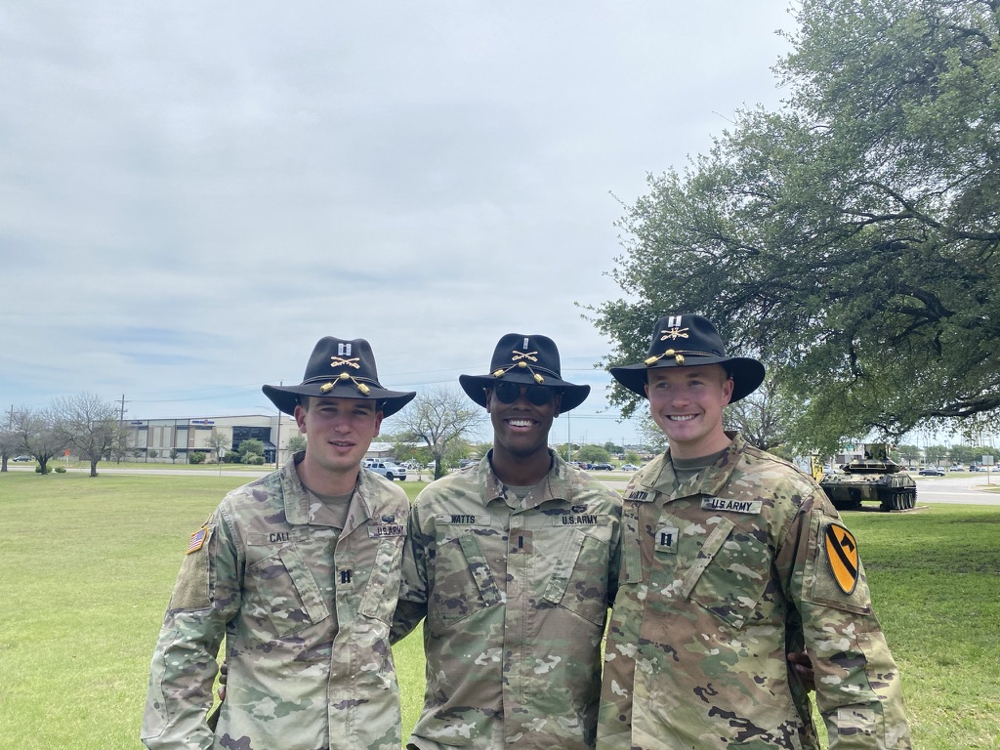

U.S. Army · 2018–2025
Troop Commander
2023–2025 · Republic of Korea / Tacoma, WA
Managed operations and personnel for a 126-person forward-deployed organization, the most forward-deployed unit of its kind, within 5KM of the DMZ in the Republic of Korea.
Selected to lead multinational, cross-organizational operations supporting a Presidential-level strategic deterrence initiative in East Asia; recognized with the Draper Award for Leadership as the top-performing business unit in the U.S. Army.
Selected by Department of the Army leadership to pilot a new strategic operating model for large-scale competitive operations, validating proof-of-concept for the Army’s new operational framework (ranked #1 of 68 peer organizations).
During a high-stakes exercise in Korea, my supply specialist told me, “I just want to be better at my job.” Eight months later, she passed the Army’s supply evaluation with the highest score in its history. That is the kind of result I lead for.
Chief of Technologies
1st Multi-Domain Task Force · 2022 · Tacoma, WA
Built the procurement and vendor management framework for a first-of-its-kind organization; led cross-border implementation of 16 emerging technology systems across 7 countries, enabling regional strategic capability (ranked #1 of 18 peer organizations).
Redesigned contracting and procurement processes to support 29x workforce growth (38 to 1,100 personnel) and 15x asset growth (129 to 1,900 equipment items) in under 11 months.
Aide-de-Camp
2021 · Fort Hood, TX / Poland
Selected as Chief of Staff-equivalent to the CEO of a 28,000-person organization; managed executive stakeholder engagement, briefings, and scheduling; contributed to strategic planning during a multinational deployment responding to Russian aggression in Eastern Europe.
Built a discretionary budget management tool in Power BI that reduced organizational travel waste by $3.9M; over 200 units adopted the practice, with savings totaling $187M in FY 2022.


Platoon Leader & Executive Officer
2019–2020 · Fort Hood, TX / Germany
Managed multinational supply chain and logistics operations for the largest NATO joint exercise since 1980 (16 allied nations), supporting a critical strategic deterrence initiative (ranked #1 of 28 peer organizations).
Led rapid contingency response operations in Poland; managed cross-border relationships with government, civilian, and multinational partners to coordinate aid delivery and run joint training programs strengthening the NATO partnership (ranked #1 of 26 peer organizations).
Founded a diversity and inclusion mentorship program serving 4,500+ personnel; its impact contributed to selection as the first organization of its type to integrate women into previously all-male roles.
Watts Family Dentistry
General Manager & Owner
2023–2026 · Tidewater, VA · ~1,800 patients a year · $2.9M annual revenue
My father built this Black-owned practice in Hampton Roads over four decades. After his passing, I stepped into a business I had known all my life but had never run.
Led strategy, operations, and finance; improved profit margins by $900K year over year through new KPI tracking and reporting, AI-enabled marketing campaigns aimed at specific demographic segments, and data-driven scheduling.
Managed a 25-member clinical, administrative, and operational team; used data on staff utilization and an organizational redesign focused on career development to increase employee retention by 64%.
Growth matters most when it keeps opportunity, care, and ownership rooted in the community.